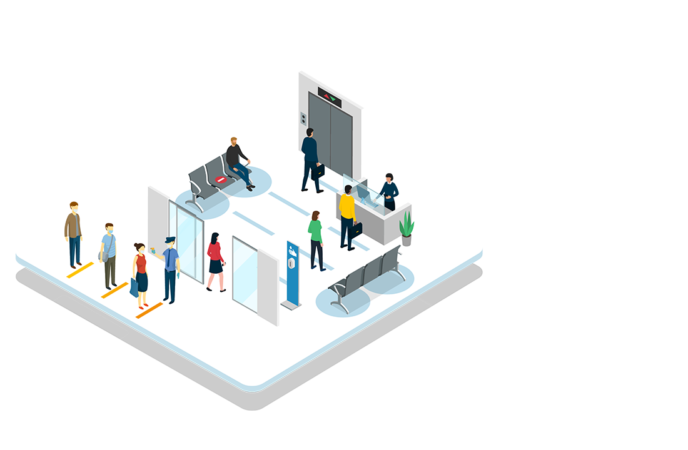
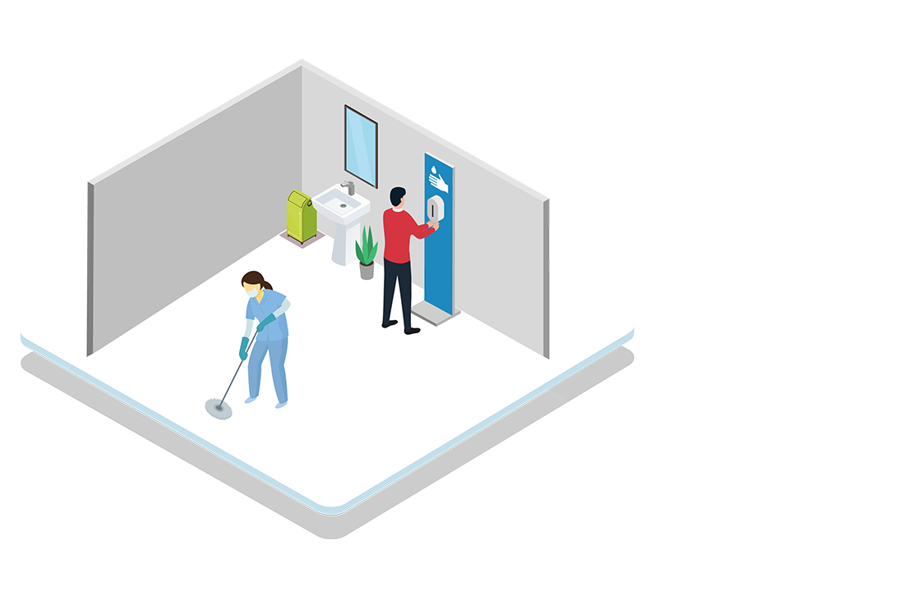
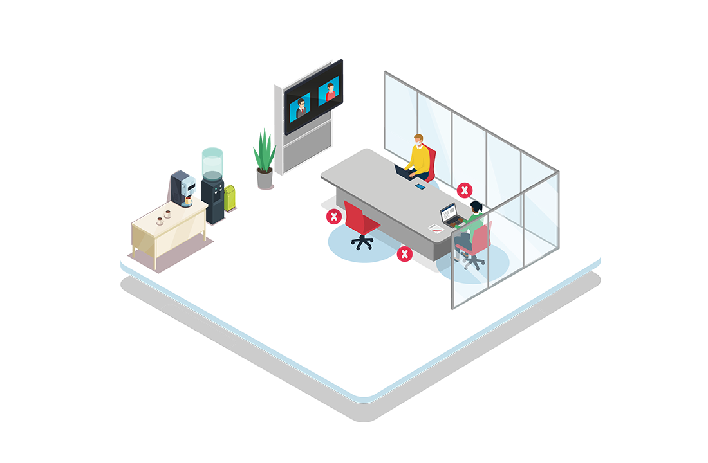
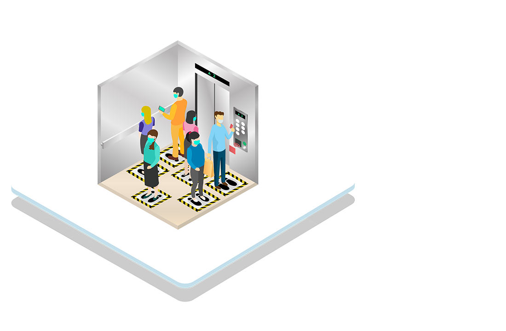

PEDOMAN oleh Kementerian Kesehatan menunjukkan bagaimana perkantoran harus beroperasi selama periode transisi ini. Panduan tersebut mencakup beberapa protokol ketat, seperti penggunaan termometer tembak atau thermogun saat memasuki kantor yang sebelumnya juga diberlakukan selama PSBB. “Tempat kerja sebagai tempat interaksi dan pendampingan orang merupakan faktor risiko yang perlu diantisipasi oleh penularannya,” kata Menteri Kesehatan Terawan di situs resmi Kementerian Kesehatan pada 23 Mei 2020.
Beberapa bisnis pun telah memberlakukan protokol mereka sendiri sesuai dengan kebutuhan atas keselamatan karyawan mereka, sembari mempertahankan kebutuhan akan produktivitas. Pemerintah juga menerapkan protokol keselamatan karyawan yang ketat, di mana pegawai negeri sipil akan dikenakan denda berat jika ketahuan melanggar protokol. Kondisi kerja yang baru ini akan membuat karyawan membatasi jumlah orang yang berhubungan dengan mereka, sampai penyakit berhenti menyebar.
MAL dan pusat ritel lainnya harus mengikuti pedoman yang tercantum dalam Surat Edaran Menteri Perdagangan Nomor 12 Tahun 2020. Panduan untuk pusat perbelanjaan lainnya, seperti pasar tradisional, juga diuraikan dalam surat tersebut.
Dalam era new normal, bisnis ritel menghadapi tantangan yang unik karena pengunjung harus dibatasi dan mengikuti ketentuan social distancing. Meskipun begitu, Roy Mandey, Kepala Asosiasi Ritel Indonesia, menyatakan pekerja siap untuk berlatih kembali berdasarkan pedoman tersebut. "Beberapa yang kami lakukan, menyiapkan tenaga kerja atau karyawan, baik yang ada di toko maupun ritel modern, kami persiapkan pelatihan untuk menangani prosedur ketetapan pandemi corona," kata Roy pada 27 Mei 2020.

PASAR tradisional, meskipun lebih aman karena lokasinya berada di luar ruangan, tetap harus tunduk pada protokol kesehatan yang ketat. Panduan ini tercantum dalam Surat Edaran Menteri Perdagangan Nomor 12 Tahun 2020. Bahkan, protokol kebersihan dan kesehatan penjual pasar jauh lebih ketat daripada bisnis ritel lainnya, karena sebagian besar penjual pasar berhubungan langsung dengan konsumen. Protokol tambahan ini diberlakukan karena adanya potensi paparan virus silang antara penjual, barang, dan pembeli.
Walaupun terdapat usulan agar pasar tradisional ditutup, karena adanya potensi kemunculan klaster baru, pemerintah dan asosiasi industri memutuskan untuk tidak mengambil langkah tersebut. Pasar tradisional tidak dapat ditinggalkan dalam new normal karena merekalah pendorong ekonomi utama bagi banyak keluarga berpenghasilan rendah di Indonesia. “Kalau pengelola pasar disiplin menerapkan protokol kesehatan, tentunya masyarakat serta pedagang akan mengikuti. Jika ada pedagang yang membandel, tidak mau mengikuti aturan, ya dikenakan sanksi tegas,” kata anggota Komisi IX DPR Rahmad Handoyo pada 15 Juni 2020.
RESTORAN dan kafe juga mengikuti protokol Kementerian Perdagangan. Bisnis industri makanan diharuskan menerapkan standar yang tinggi dalam panduan ini. Pasalnya, mereka tidak hanya berurusan dengan kesehatan pelanggan dan karyawan, tapi juga makanan yang mereka jual, termasuk saat makanan tersebut dimasak.
Protokol-protokol ini berlaku untuk seluruh bisnis makanan yang memperbolehkan pelanggan makan di tempat. Dari restoran yang berada di dalam hotel hingga restoran di area peristirahatan atau rest area tol, semuanya wajib mengatur sirkulasi dan jumlah pengunjung. Beberapa restoran pun membuat protokol sendiri, sebagai tambahan atas protokol dari pemerintah.
"Kita tidak akan masuk ke restoran seperti dulu lagi," ujar Menteri Perencanaan Pembangunan Nasional Suharso Monoarfa pada 2 Juni 2020. Suharso mengatakan, di masa sekarang ini, bisa saja pengunjung harus memesan tempat jika ingin makan di restoran, laiknya ketika akan memeriksakan diri ke dokter.